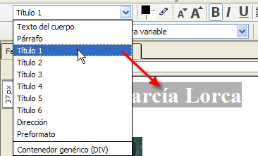

Una hoja de estilo es un archivo de extensión *.CSS (CSS, Cascading Style Sheets = Hojas de estilo) que contempla definiciones de formato (tipo de fuente, tamaño, color de la fuente, color de fondo, párrafos, etc) de las distintas etiquetas que forman una página *.HTML.
Su principal ventaja es definir un mismo aspecto para todas las páginas de un sitio web. Se crea una hoja de estilo y se vinculan todas las páginas del sitio web a este archivo. Cualquier cambio efectuado en la hoja de estilo afecta instantáneamente al formato de todas las páginas vinculadas a la misma.
Cuando desde el editor HTML visual se asocia un formato a un fragmento de texto o bien se convierte en un enlace lo que realmente se está haciendo es situar ese texto entre etiquetas HTML para que el navegador lo interprete y visualice adecuadamente.
Ejemplo: Si desde Kompozer seleccionas el texto titular de una página web y a continuación despliegas la lista de formatos para seleccionar Título 1 (de forma similar a lo propuesto en las actividades anteriores de este curso), realmente el fragmento de texto se ha “etiquetado” como <h1> Texto seleccionado … </h1>. Si hubieramos elegido Título 2 se habría etiquetado con <h2> … </h2>, etc.

Algunas etiquetas HTML son:
Existen muchas más etiquetas pero en esta práctica sólo vamos a modificar el formato (color, tipo, tamaño, efecto, etc) de los textos etiquetados con las que se citan.
En esta práctica vamos a crear una hoja de estilo y se vinculará a una página.